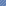

<div class="mui-panel">
	<div id="corner"></div>
	<h1>Workshop</h1>
	<div ul>
	{%- assign workshoplist = site.data.workshop | where: 'group', 'workshop' %}
	{%- for i in workshoplist %}
		<div li>
			<div class="mui-panel">
				<div class="mui--text-headline">{{ i.name }}</div>
				<div>{{ i.desc }}</div>
				<a href="{{ i.url }}"></a>
			</div>
		</div>
	{%- endfor %}
	</div>
</div>

<div class="mui-panel" blueprints>
	<h1>Blueprints</h1>
	<div ul>
	{%- assign workshoplist = site.data.workshop | where: 'group', 'blueprint' %}
	{%- for i in workshoplist %}
		<div li>
			<div class="mui-panel">
				<div class="mui--text-headline">{{ i.name }}</div>
				<div>{{ i.desc }}</div>
				<a href="{{ i.url }}"></a>
			</div>
		</div>
	{%- endfor %}
	</div>
</div>

<style>
{% capture scss %}
/* 所有板块 */
div[ul]{
	/* 多列布局 - 子项容器 */
	-webkit-column-width: 280px;
	-moz-column-width: 280px;
	column-width: 280px;
	-webkit-column-gap: .5em;
	column-gap: .5em;
	div[li]{
		/* 多列布局 - 子项 */
		-webkit-column-break-inside: avoid;
		break-inside: avoid;
		padding: 5px 2px .1px;
		.mui-panel{
			> .mui--text-headline hr{
				display: inline-block;
				border: none;
				vertical-align: middle;
				width: 1.3em;
				height: 1.3em;
				margin-right: .2em;
				&[dir]{
					background: url(/img/os/windows/dir-32.png);
				}
			}
			/* 确保A元素填充 */
			position: relative;
			a{
				text-decoration: none;
				color: #000;
				cursor: pointer;
				position: absolute;
				width: 100%;
				height: 100%;
				top: 0;
				left: 0;
			}
		}
	}
}

/* 车间板块 */
#corner{
	/* 动画标 */
	position: absolute;
	right: 0;
	top: 5px;
	width: 160px;
	height: 96px;
	background: url(shipyardweldinglit.png) no-repeat;
	background-size: cover;
	& ~ div[ul] div[li] .mui-panel{
		/* 按钮样式 */
		background-color: #F8F8F8;
		transition: .2s;
		&:hover{
			background-color: #E8E8E8;
		}
		&:active{
			background-color: #D8D8D8;
		}
	}
}

/* 蓝图板块 */
[blueprints]{
	/* 容器样式 */
	color: #fff;
	background: url(blueprint.png);
	background-position: 10px 20px;
	div[li] .mui-panel{
		/* 按钮样式 */
		background: #5677b0;
		border: #fff 2px solid;
		&:hover{
			background: #5677ae url(blueprint-normal.png);
		}
		&:active{
			background: #6a87b7 url(blueprint-active.png);
			border-color: rgba(255, 255, 255, .5);
		}
	}
}
{% endcapture %}
{{ scss | scssify }}
</style>

<!-- 蓝图板块 - 提前加载图片 -->


<script>
/* 车间板块 动画标 */
(function(){
	var c = document.getElementById('corner');
	var cframe = 0;
	setInterval(function(){
		c.style.backgroundPositionX = (cframe * -c.clientWidth) + 'px';
		cframe++;
		if(cframe >= 15) cframe = 0;
	}, 100);
})();
</script>
